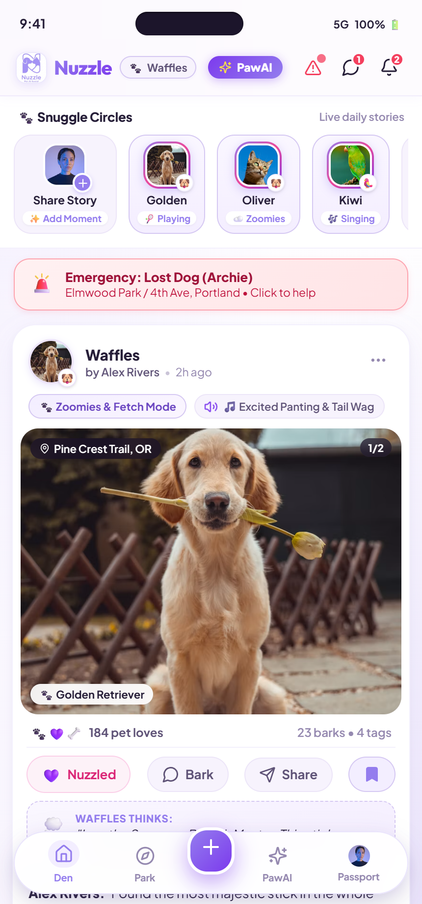
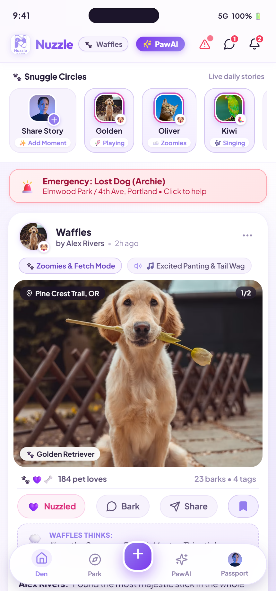

Nuzzle: The AI-Powered Pet Social Network
"An AI-powered, pet-first mobile social ecosystem that unites Dhaka's pet parents through dedicated pet profiles, 24/7 AI health triage, visual lost-pet matching, and emergency street-rescue dispatch."
What is Nuzzle & What Are We Solving?
A social network built around pets rather than people, powered by safety AI
🐾 What is Nuzzle?
The structural decision that defines the product: The pet holds the account, not the owner. A profile belongs to an animal and carries its name, breed, photos, milestones, health logs, and personality-driven bio.
On top of this social graph sit 3 core AI systems: Visual Lost-Pet Matching, 24/7 Health Urgency Triage, and Adoption Compatibility Matching—plus location-based injured-animal rescue alerts.
⚡ What Problem Are We Solving?
Bangladesh has 64M social users and pet ownership surged +170% in 3 years. Yet the entire community lives in chaotic Facebook groups where:
- Lost pets get buried: No visual similarity matching against found strays.
- Medical triage vacuum: Panic clinic visits vs dangerous delays.
- Injured street strays: Broadcasts to everyone reach nobody in particular.
Key Learnings from the UI/UX Session
How core human-centered design principles shaped Nuzzle's architecture
Pet-As-Entity IA
Decoupling from human social timelines. The pet holds the primary account, milestones, and medical history, providing structured data for downstream AI models.
Core IA StrategyCalm Lavender Ergonomics
During lost-pet panic or medical symptoms, high-contrast feeds heighten anxiety. Our soothing lavender & textured white palette fosters trust and emotional de-escalation.
Emotional DesignZero-Barrier Emergency UX
When encountering an injured animal on Dhaka streets, reporting takes <30 seconds with zero mandatory login—eliminating friction at life-or-death moments.
Frictionless ActionTactile Pet Reactions
Replacing generic heart likes with Facebook-style pet micro-interactions: Paw Five 🐾, Nuzzle 💜, Treat 🦴, Fetch 🎾, and Purr 😻 for joyful community engagement.
Micro-InteractionsProblem Statement & Target Users in Bangladesh
A fast-growing pet community trapped in fragmented, unsearchable Facebook groups
The Unaddressed Pain Points:
- No Pet Identity: Pets exist as photos in human timelines with no persistent health history.
- Lost-Pet Search Failure: Reports get buried in Facebook groups with zero visual matching.
- Medical Triage Vacuum: Panic trips to clinics vs dangerous delays for first-time owners.
- Injured Animals Left Behind: Broadcast posts reach everyone in general, but no responder in particular.
3 Core Target Personas (Dhaka First):
Dhaka owners (Dhanmondi, Gulshan, Uttara) seeking care, identity, local playdates & emergency support.
4,000+ shops nationally with zero pet-tailored storefronts. Monetized via Tk 500/mo verified business subscriptions.
Active Dhaka street-animal rescue networks utilizing geo-fenced claim-and-lock dispatch free of charge.
Design Process & Architectural Decisions
Translating user needs into defensible, safety-first workflows
1. Locality-First Feed
Ranked strictly by recency & neighborhood proximity rather than dopamine-optimizing engagement. Builds genuine familiarity so lost pets are recognized instantly by immediate neighbors.
PostGIS Geo-Radius2. 3-Tier Health Triage
Input symptoms in Bangla or English. Classifies into: (1) Monitor at home, (2) See vet in 24–48h, or (3) Emergency Care Now with clinic routing. Explicitly escalation-biased for safety.
Vet-Signed Safety3. Claim-and-Lock Rescue
Progressive geo-fenced alert broadcast to nearest registered NGO volunteers. First responder claims and locks report, preventing wasted trips and showing live arrival status to the reporter.
Emergency DispatchDen Feed & Facebook-Style Pet Reaction Dock
Magazine moment cards with bespoke pet-first tactile interactions
🐾 Magazine Moment Card Anatomy
Curved organic media containers with floating location pills, species badges, and double-tap reaction bursts.
✨ Granular UI Elements:
Live tags like 🐾 Zoomies & Fetch Mode and pulsing soundwaves (🎵 Excited Panting & Tail Wag).
Hover/click triggers floating frosted glass dock with 1.4x zoom and tooltips: 🐾 Paw Five, 💜 Nuzzle, 🦴 Treat, 🎾 Fetch, 😻 Purr.
Humorous first-person pet thoughts: 💭 "I am the Supreme Branch Master."
PawAI Intelligence Suite & 24/7 Triage
Multimodal AI vision scanner, emergency triage, and pet emotion translator

📸 PetScan AI Vision
Computer vision analyzing breed purity (98.4%), body condition, coat sheen, and mood from a single photo.
🩺 24/7 Symptom Triage
Bangla/English natural language triage with Low, Moderate, and Critical urgency routing to nearby Dhaka clinics.
🎙️ Audio Voice Translator
Real-time bark/meow audio waveform capture translating pet vocalizations into humorous thought bubbles.
Safety Radar, Snuggle Circles & Pet Passport
5-mile emergency broadcasting, daily stories, and digital medical records
🚨 5-Mile Lost & Found Radar
Visual embedding photo comparison and <30-sec emergency street animal reporting with claim-and-lock.

✨ Snuggle Circles Stories
Squircle daily story carousel with live status badges (☁️ Zoomies, 🎶 Singing) and glowing rings.
🐾 Pet Passport & Switching
Floating Island Navigation bar, on-the-fly pet perspective switcher, and complete vaccination logs.
Lavender & White Textured Design Tokens
Curated aesthetics, glassmorphism, and thumb-zone mobile ergonomics
🎨 Color Tokens & Textured Styling
Frosted Glassmorphism: backdrop-filter: blur(24px) with 1.5px subtle lavender borders and pillowy multi-layer shadows.
🌙 Dark & Light Textured Modes
Seamless single-tap dark mode toggle preserving high contrast and accessibility standards across all views.
Conclusion & Six-Month Dhaka Launch Roadmap
From functional prototype to a live, defensible community ecosystem
🚀 6-Month Roadmap & Gate Criteria (Dhaka):
- Months 1–2 (Foundation): Pet profiles, follow graph, locality feed, UX complete.
- Month 3 (Lost-Pet AI): Precision@5 ≥ 60% with visual embedding similarity.
- Month 4 (Triage & Rescue): Vet sign-off, <5% under-triage rate, 20+ Dhaka responders.
- Month 5 (Adoption AI): Compatibility scoring, 50 verified shops, 10 shelters.
- Month 6 (Public Dhaka Launch): 10,000 registered users, 12,000 pet profiles.
Key Prototype Learnings:
The social layer earns daily attention and generates continuous training data; the AI features provide indispensable crisis support. Neither functions without the other.
"Pets are family. Nuzzle gives them the dedicated, intelligent, and compassionate platform they deserve."